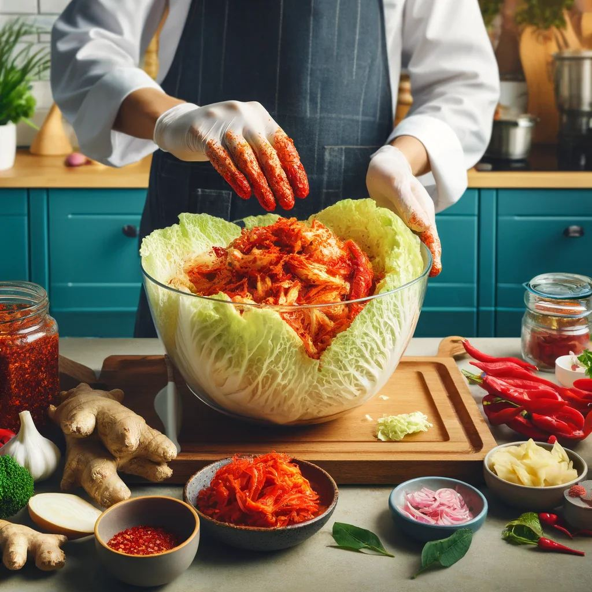
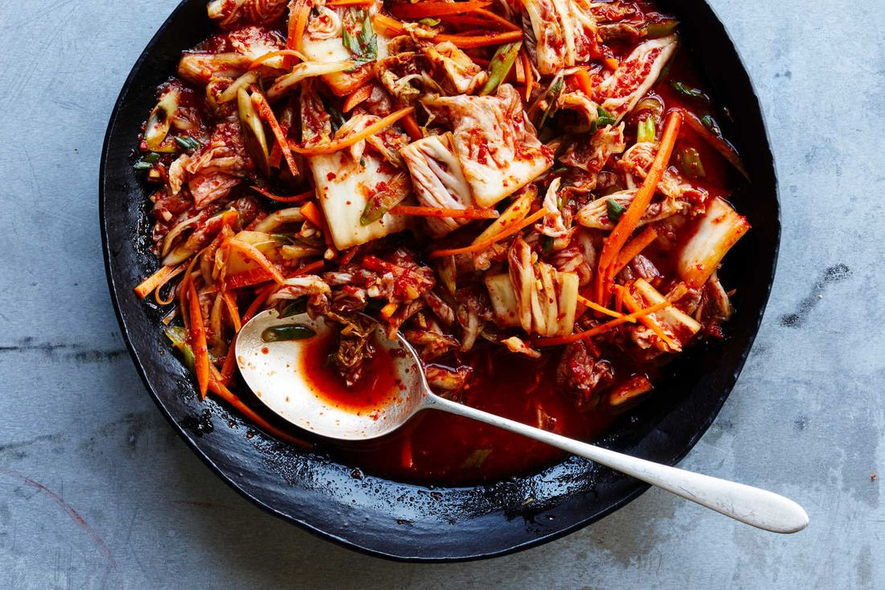
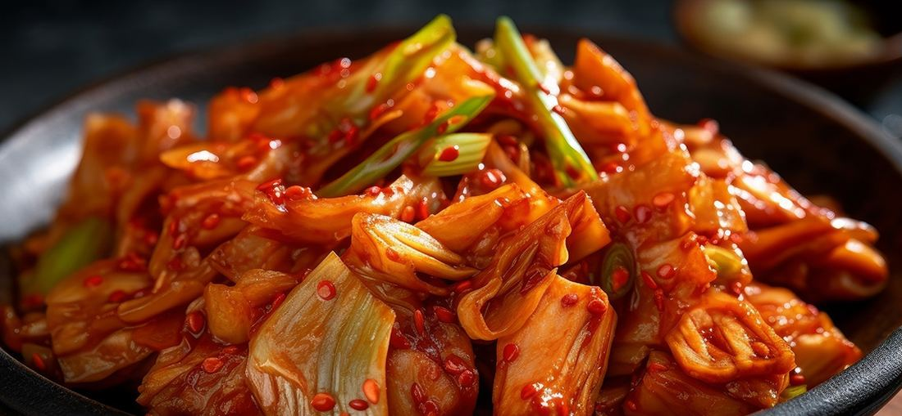
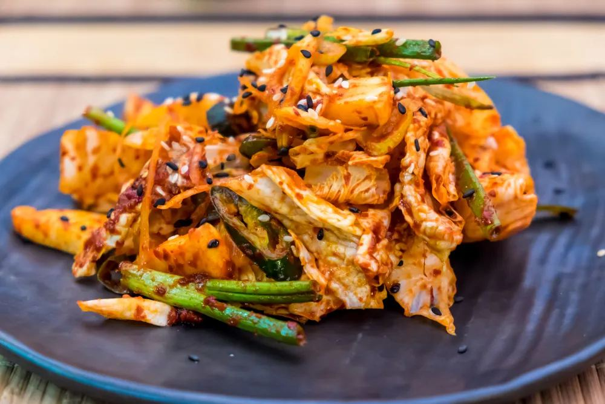

Kimchi Beyond the Side Dish: Creative Ways to Use Kimchi in Everyday Cooking
Kimchi Beyond the Side Dish: Creative Ways to Use Kimchi in Everyday Cooking
Discover the transformative power of kimchi in your kitchen. This beloved Korean staple from Miami Kimci brings a burst of umami, spice, and complexity to any dish. While traditionally served as a side dish, kimchi's versatility extends far beyond its conventional role.
Why Explore Creative Kimchi Cooking?
- Adds depth to everyday recipes
- Creates unique flavor combinations
- Transforms familiar dishes into exciting culinary adventures
- Brings probiotic benefits to your meals
- Reduces food waste by using leftover kimchi
From breakfast to dinner, sweet to savory, this fermented powerhouse ingredient opens up endless possibilities for culinary creativity.
One such innovative way to incorporate kimchi into your meals is by pairing it with Japanese Buckwheat Noodles Zaru Soba . The robust flavors of kimchi complement the nutty taste of buckwheat noodles perfectly, creating an exciting culinary adventure.
Let's explore more innovative ways to incorporate kimchi into your daily cooking routine and elevate your meals with its distinctive taste.
I. Introduction
Kimchi is a staple of Korean cuisine, with a history spanning over 2,000 years. What started as a way to preserve vegetables during cold winters has now become a symbol of Korean culture. At Kimchi Mart , we honor this tradition by offering genuine kimchi to the diverse food lovers of South Florida.
The Art of Kimchi-Making
The skill of making kimchi showcases Korea's inventive nature, turning basic ingredients like Napa cabbage, radishes, and Korean red pepper powder into a complex masterpiece of flavors. In traditional Korean homes, specific earthenware containers called onggi are used to ferment various types of kimchi, each serving distinct dietary and seasonal purposes.
Traditional Kimchi Uses:
- Essential banchan (side dish) at every Korean meal
- Base ingredient for soups and stews
- Natural probiotic source during winter months
- Ceremonial food during special occasions
Kimchi's Global Influence
The global food scene has embraced kimchi's versatility, transforming it from a side dish into a culinary powerhouse. Modern chefs incorporate its bold, umami-rich profile into:
- Western-style sandwiches and burgers
- Fusion tacos and burritos
- Gourmet pizza toppings
- Creative pasta dishes
This fermented delicacy has captured international attention, with kimchi-making recognized by UNESCO as an Intangible Cultural Heritage of Humanity. Its unique combination of spicy, sour, and savory flavors adds depth to countless dishes, making it a valuable ingredient in both traditional and contemporary cooking.
Discover More at Kimchi Mart
At Kimchi Mart , we not only offer authentic kimchi but also a wide range of Asian foods and organic vegetables all under one roof. You can explore our offerings through our online gallery here . For those interested in incorporating kimchi into their culinary creations, we even provide guidance on making delicious kimchi-based dishes such as the popular kimchi jjigae .
II. Health Benefits of Kimchi
Kimchi is not just a delicious side dish; it's also packed with health benefits that make it a nutritional powerhouse. Here are some of the ways kimchi can support your well-being:
1. Promotes Digestive Health
The fermentation process used to make kimchi creates beneficial probiotics—live microorganisms that promote a healthy gut. These good bacteria help with:
- Breaking down food effectively
- Absorbing nutrients efficiently
- Supporting immune system function
- Reducing digestive issues
2. Boosts Nutrient Intake
Kimchi is made from raw vegetables, such as Napa cabbage and radishes, which are rich in essential vitamins and minerals. Some key nutrients found in kimchi include:
- Vitamin A: Supports eye health and immune function
- B Vitamins: Aids energy production and brain function
- Vitamin C: Boosts collagen production and immunity
3. Provides Antioxidant Protection
The vegetables used in kimchi contain powerful antioxidants that help combat oxidative stress in the body. These compounds, including flavonoids, beta-carotene, and capsaicin from red pepper flakes, have been shown to reduce inflammation and potentially lower the risk of chronic diseases.
4. Enhances Nutrient Absorption
Fermentation not only adds unique flavors to kimchi but also enhances the bioavailability of certain nutrients. This means that the nutrients in kimchi become easier for your body to absorb and utilize, making it an excellent addition to a balanced diet.
5. Supports Immune Function
The combination of spices like garlic, ginger, and red pepper flakes used in kimchi adds additional anti-inflammatory properties while boosting the immune system. These ingredients have long been known for their health benefits and can further enhance the overall nutritional profile of this fermented dish.
To experience these health benefits firsthand, you can explore various types of kimchi available at your local Kimchi Mart , which offers a wide range of authentic kimchi and other Asian foods.
III. Cooking with Kimchi: Breakfast Ideas

Transform your morning routine with the vibrant flavors of kimchi. Starting your day with this probiotic-rich ingredient adds both nutrition and excitement to traditional breakfast dishes.
A. Kimchi Omelette
Master the art of creating a perfect kimchi omelette with this simple recipe:
Ingredients:
- 3 large eggs
- 1/4 cup chopped kimchi
- 2 tablespoons kimchi juice
- 2 tablespoons butter
- Salt and pepper to taste
Instructions:
- Drain and chop the kimchi into small, bite-sized pieces
- Whisk eggs in a bowl until well combined
- Mix in the chopped kimchi and kimchi juice
- Heat butter in a non-stick pan over medium heat
- Pour the egg mixture into the pan
- Cook until edges start to set
- Gently fold one side over the other
- Cook for an additional minute until golden brown
Flavor Enhancers:
- Sprinkle shredded cheese before folding
- Add diced green onions
- Include sautéed mushrooms
- Top with sesame oil and seeds
- Incorporate diced spam or bacon
Pro Tips:
- Use well-fermented kimchi for deeper flavor
- Don't overcook the eggs - keep them slightly runny before folding
- Pat kimchi dry to prevent excess moisture
- Let the pan heat properly before adding eggs
This protein-rich breakfast combines the umami flavors of kimchi with the satisfying texture of perfectly cooked eggs. The kimchi adds a spicy kick while creating a complex flavor profile that elevates the simple omelette into a memorable morning meal.
If you're looking to diversify your breakfast even further, consider incorporating some Spicy Shrimp Flavor Cup Noodle Soup into your meal plan. This organic and healthy option can add an exciting twist to your morning routine!
B. Kimchi Avocado Toast
Transform your morning routine with this nutrient-packed kimchi avocado toast. This fusion breakfast combines creamy avocado with the bold, spicy notes of kimchi for an energizing start to your day.
Base Ingredients:
- 2 slices sourdough bread
- 1 ripe avocado
- 1/2 cup chopped kimchi
- Salt and pepper to taste
- Optional: sesame seeds, green onions
Quick Assembly Guide:
- Toast bread slices until golden brown
- Mash avocado with a fork
- Spread avocado evenly on toast
- Top with chopped kimchi
- Garnish with optional toppings
Pro Tips:
- Drain kimchi before adding to prevent soggy toast
- Lightly salt the avocado to enhance flavors
- Add a drizzle of sesame oil for extra depth
This breakfast combination delivers a powerful nutritional punch. The healthy fats from avocados aid in vitamin absorption, while kimchi's probiotics support digestive health. The fermented vegetables in kimchi complement the creamy avocado, creating a balanced meal rich in fiber, vitamins, and beneficial bacteria.
For extra protein, consider adding a poached egg or crumbled tofu on top. The runny yolk or seasoned tofu creates an additional layer of richness that pairs perfectly with the tangy kimchi.
IV. Lunch Inspirations Using Kimchi

Transform your midday meals with the bold, tangy flavors of kimchi. This versatile Korean staple adds depth and complexity to traditional lunch dishes, creating exciting new flavor combinations that will revolutionize your lunch routine.
A. Kimchi Fried Rice
This quick, satisfying dish turns leftover rice into a flavorful masterpiece. Here's how to create the perfect kimchi fried rice using a rice cooker for optimal results:
Essential Ingredients:
- 2 cups day-old cooked rice
- 1 cup chopped kimchi
- 2 tablespoons kimchi juice
- 2 eggs
- 2 tablespoons vegetable oil
- 1 cup diced spam or protein of choice
- 2 green onions, chopped
- 1 tablespoon sesame oil
Step-by-Step Instructions:
- Heat vegetable oil in a large skillet or wok over medium-high heat.
- Add diced spam and cook until crispy.
- Push spam to one side and crack eggs into the pan, scrambling them quickly.
- Add rice, breaking up any clumps (using cold, day-old rice is key here).
- Stir in chopped kimchi and kimchi juice.
- Cook for 3-4 minutes, stirring frequently.
- Finish with sesame oil and green onions.
Pro Tips for Perfect Kimchi Fried Rice:
- Use cold, day-old rice - fresh rice becomes mushy.
- Break up rice clumps before adding to the pan.
- Don't overcrowd the pan - cook in batches if needed.
- Add kimchi juice for extra depth of flavor.
- Customize with different proteins:
- Bacon
- Tofu
- Shrimp
- Chicken
Rice Alternatives:
- Cauliflower rice for a low-carb option
- Brown rice for added nutrition
- Quinoa for a protein boost
The key to exceptional kimchi fried rice lies in achieving the perfect balance between the spicy, tangy kimchi and the savory elements of your chosen protein. Let the ingredients caramelize slightly for enhanced flavor development.
If you're looking for a quicker meal option, consider trying some kimchi ramen . The combination of spicy ramen noodles and tangy kimchi makes for a deliciously satisfying meal that can be prepared in no time!
B. Savory Kimchi Pancakes (Kimchijeon)
Kimchijeon transforms your leftover kimchi into crispy, savory pancakes that make a perfect lunch option. These golden-brown delights combine the tanginess of fermented kimchi with a light, crispy batter.
Basic Recipe Instructions:
- Chop 1 cup of kimchi into small pieces
- Mix with 1 cup all-purpose flour
- Add ½ cup kimchi juice
- Stir in ¼ cup water
- Season with a pinch of salt
- Heat oil in a non-stick pan
- Pour batter and spread into a thin circle
- Cook until golden brown on both sides
Pro Tips:
- Add scallions and seafood for extra flavor
- Keep the pancake thin for maximum crispiness
- Use medium-high heat for the perfect texture
Signature Dipping Sauce:
Mix equal parts of:
- Soy sauce
- Rice vinegar
- A touch of sesame oil
- Chopped green onions
- Toasted sesame seeds
Serve these pancakes hot, cut into triangular pieces. The exterior should be crispy while maintaining a slightly chewy center. Pair with a cold glass of beer or makgeolli (Korean rice wine) for an authentic Korean dining experience.
These versatile pancakes work beautifully as a main dish or can be cut into smaller pieces for appetizers. Store any leftovers in an airtight container and reheat in a pan to restore crispiness.
5. Dinner Delights Featuring Kimji

Transform your dinner table with the hearty warmth of kimchi-based dishes. These satisfying meals bring depth and complexity to evening dining, creating memorable experiences for family and friends
A. Kimji Stews (Jjigae)
Korean stews showcase kimchi's versatility as a main ingredient rather than a side dish. The fermented vegetables create a rich, tangy broth that serves as the perfect base for countless variations.
Classic Kimchi Jjigae Base Recipe:
- 2 cups aged kimchi
- 8 cups water or anchovy stock
- 1 tablespoon gochugaru (Korean red pepper flakes)
- 2 tablespoons gochujang (Korean red pepper paste)
- 1 tablespoon minced garlic
- 1 tablespoon soy sauce
For a detailed guide on how to make this classic dish, you can refer to this recipe .
Popular Protein Additions:
- Pork Belly - adds richness and pairs naturally with kimchi's tang
- Tofu - creates a lighter version while absorbing the stew's flavors
- Tuna - brings oceanic depth to the dish
- Spam - a beloved Korean-American fusion option
Vegetable Combinations:
- Green onions and mushrooms
- Zucchini and carrots
- Bean sprouts and spinach
- Potatoes and onions
Regional Variations:
- Seoul Style - features rice cakes and glass noodles
- Busan Style - incorporates fresh seafood
- Jeolla Style - includes extra vegetables and mild spicing
The key to an exceptional kimchi stew lies in the age of your kimchi - older, more fermented kimchi creates deeper flavors. Let the stew simmer until the proteins are tender and the broth has reduced to your desired consistency. The resulting dish delivers warmth, nutrition, and satisfaction in every spoonful.
B. Fusion Dishes with Kimji
Kimji's bold flavors create exciting possibilities in fusion cuisine. Let's explore innovative combinations that blend Korean traditions with global favorites.
1. Kimji Mac and Cheese
- Mix chopped kimji into your favorite mac and cheese recipe
- Add gochugaru (Korean red pepper flakes) for extra heat
- Top with panko breadcrumbs and melted butter
- Bake until golden brown and bubbling
2. Kimji Quesadillas
- Layer kimji between tortillas with melted cheese
- Add protein options: shredded chicken or bulgogi beef
- Include fresh cilantro and green onions
- Serve with sour cream and guacamole
3. Creative Fusion Ideas
- Kimji Grilled Cheese: Layer kimji with cheddar on sourdough
- Pizza Topping: Combine with mozzarella and mushrooms
- Burger Addition: Mix into beef patties before grilling
- Pasta Sauce Base: Blend with cream for a spicy sauce
4. Tips for Fusion Success
- Start with small amounts of kimji to balance flavors
- Pair with mild cheeses to let kimji shine
- Consider texture combinations
- Adjust spice levels by rinsing kimji if needed
These fusion dishes showcase kimji's versatility while creating new taste experiences. The key lies in balancing traditional Korean flavors with familiar comfort foods, opening doors to culinary creativity.
VI. Snacks and Appetizers Involving Kimchi

Transform your snack game with creative kimchi-based appetizers that blend Korean flavors with familiar party favorites. These versatile recipes add an exciting twist to your entertaining menu while delivering probiotic benefits and bold tastes.
A. Kimchi Dip Recipes
Create these quick, flavorful dips using ingredients from Miami Kimchi :
Classic Kimchi Yogurt Dip
- 1 cup finely chopped kimchi
- 2 cups plain Greek yogurt
- 2 tablespoons sesame oil
- 1 tablespoon minced garlic
- Salt to taste
Creamy Kimchi Ranch
- 1/2 cup pureed kimchi
- 1 cup sour cream
- 1/4 cup mayonnaise
- 1 tablespoon ranch seasoning
- Fresh chives for garnish
Perfect Pairings
Raw Vegetables
- Cucumber spears
- Carrot sticks
- Bell pepper strips
- Celery stalks
- Cherry tomatoes
Crunchy Options
- Rice crackers
- Toasted pita chips
- Wonton crisps
- Sesame crackers
- Tortilla chips
Pro Tips
- Drain kimchi thoroughly before blending to prevent watery dips
- Let dips rest for 2 hours before serving to develop deeper flavors
- Store in airtight containers for up to 3 days
- Adjust spice levels by adding gochugaru (Korean red pepper flakes)
These dips work beautifully as:
- Party appetizers
- Movie night snacks
- Sandwich spreads
- Baked potato toppings
- Salad dressings
B. Kimji Dumplings
Create irresistible homemade dumplings with this kimchi-infused recipe that brings together Korean and Chinese culinary traditions.
Basic Dumpling Filling Recipe:
- 1 cup finely chopped kimchi
- 1/2 pound ground pork or crumbled firm tofu
- 2 minced garlic cloves
- 1 tablespoon grated ginger
- 2 chopped green onions
- 1 tablespoon sesame oil
Assembly Instructions:
- Drain and chop kimchi into small pieces
- Mix filling ingredients until well combined
- Place 1 teaspoon of filling in center of dumpling wrapper
- Wet edges with water
- Fold and pleat to seal
Cooking Methods:
Pan-Frying
- Heat oil in a non-stick pan
- Place dumplings flat side down
- Cook 2-3 minutes until golden
- Add 1/4 cup water
- Cover and steam 3-4 minutes
Steaming
- Line steamer basket with cabbage leaves
- Place dumplings 1 inch apart
- Steam 8-10 minutes
Pro Tips:
- Squeeze excess moisture from kimchi before mixing
- Don't overfill wrappers
- Freeze uncooked dumplings on a tray before transferring to freezer bags
- Cook frozen dumplings directly without thawing
Serve with a dipping sauce of soy sauce, rice vinegar, and a dash of sesame oil for the perfect finish.
Frequently Asked Questions
-
What is kimchi and what are its traditional uses?
Kimchi is a traditional Korean dish made from fermented vegetables, primarily napa cabbage and radishes, seasoned with various spices. Historically, it has been used as a side dish in Korean cuisine, providing flavor and nutrition. Over time, its global popularity has grown due to its versatility in cooking.
-
What are the health benefits of kimchi?
Kimchi is rich in probiotics, which support gut health. It also contains essential vitamins A, B, and C, along with antioxidants that may have anti-inflammatory properties. These nutritional benefits make kimchi a valuable addition to a healthy diet.
-
How can I incorporate kimchi into my breakfast?
You can add kimchi to breakfast dishes like omelettes or avocado toast. For example, a kimchi omelette can be made by mixing eggs with chopped kimchi and cooking them together for a flavorful start to your day. Kimchi avocado toast combines healthy fats with the tanginess of fermented food for a nutritious meal.
-
What are some lunch ideas using kimchi?
For lunch, consider making kimchi fried rice using leftover rice and adding proteins like spam or eggs. Another delicious option is savory kimchi pancakes (kimchijeon), which can be served with dipping sauces for extra flavor.
-
Can I use kimchi in dinner recipes?
Absolutely! Kimchi can be used in various dinner dishes such as stews (jjigae) that incorporate different proteins and vegetables. You can also experiment with fusion recipes like kimchi mac and cheese or quesadillas for an innovative twist on classic meals.
-
What are some snack ideas featuring kimchi?
For snacks, you can create yogurt-based dips blended with kimchi to pair with vegetables or crackers. Additionally, consider making dumplings filled with a mixture of pork or tofu and kimchi, which can be steamed or pan-fried for a tasty bite-sized treat.
< Older Post
Newer Post >
Shop these ingredients at Kimchi Mart
Six stores across South Florida — or order online and pick up in an hour.